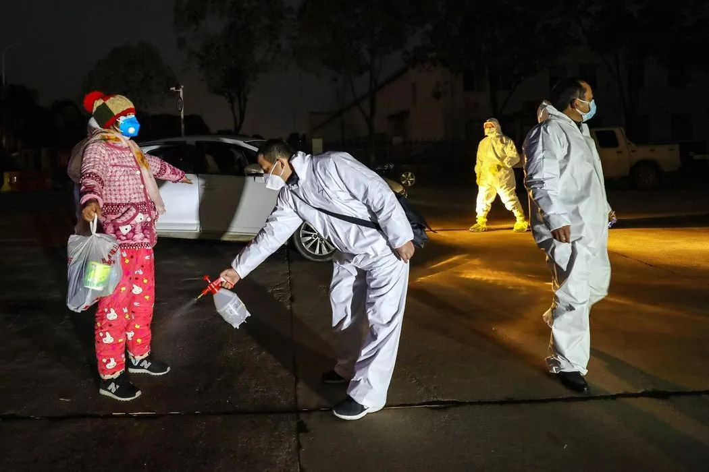
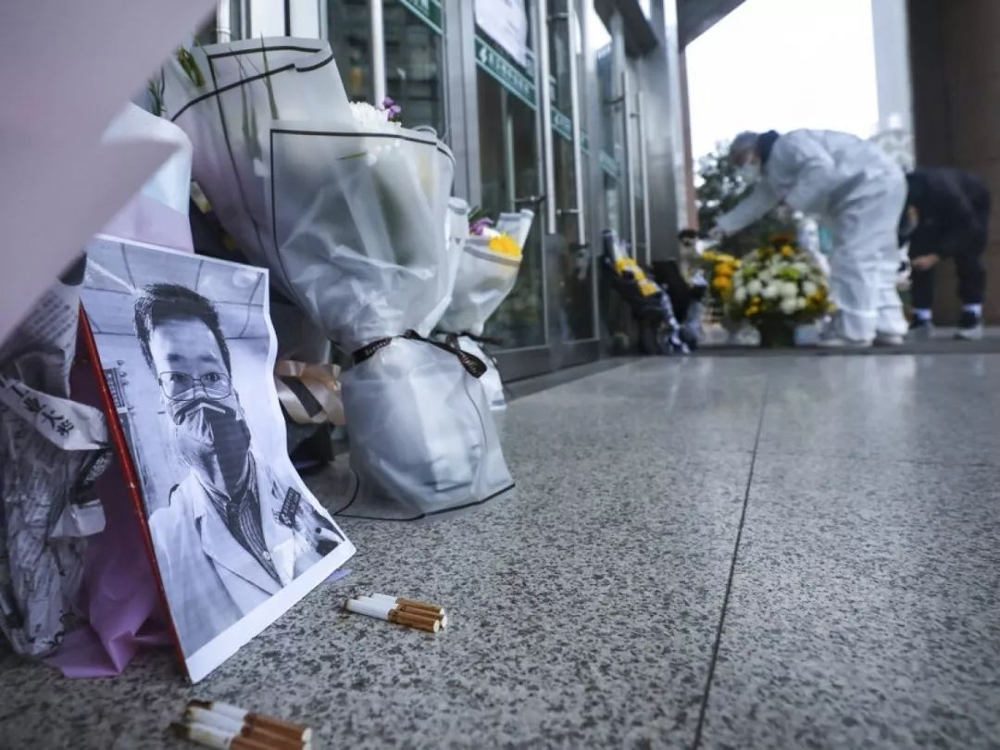

李文亮医生离世的第一夜，市民自发悼念： “谢谢你的勇敢”
原文链接 备份链接 *************▲*************（黎央/图） 全文共*775*字，文字阅读大约需要2分钟。 本文首发于南方周末 未经授权 不得转载 文 | 南方周末记者 李在磊 黎央 责任编辑 | …

自武汉封城以后，许多人冒着各种危险，将这座城市在疫情之下发生的事实与真相记录下来，外卖员张赛就是其中的一位。作为记录者，张赛也怀疑这些文字是否会像投入水里的一颗石子，掀不起多大涟漪。事实上，这些记录的意义不在于涟漪大小——涟漪总是短暂的，而在于让其他人意识到，我们可以将胸中的块垒投出去，让水落石出。

投一个石子到水里去
2020 年 2 月 3 日
工作站恢复了早会晚会。大家一起喊口号，一起拍视频。46 个员工来了 32 个。管理说，能来的都来了，我们站点正常了。
管理又说，我们是一个集体。在这个非常的时刻，让我们为胜利而战斗。
想起旧小说上的一句话：群贤毕至，诸神归位。
我们是那么喜欢凑在一起。吃饭有饭局，洗澡有澡堂，相亲有可自由贸易的相亲大会。
开晚会的时候，每人发了一箱橙子。大家把橙子举过头顶，一起呐喊。
举橙子，好累。我心里喊。
我留下几个橙子，剩下半箱送给我哥家。我打电话让他戴好口罩下来。坐在电动车上等他下楼，等了两分钟没下来。有些焦躁，下意识地摸了一下手机。如果是客户，我会打电话催一下。对于外卖，时间就是金钱。我把橙子放在地上，哥把热乎乎的芋头放在电动车踏板上。转身，各走各的。
回去和哥视频，他说要过来拿点面粉和盐。我说你别过来了，昨天我有一点咳嗽，今天好了，好了也别过来。到超市先买一包。
今天下班的时候天有些黑了。有车，没人按喇叭。有人，没人说话。有雨，有雨声。
我在武汉跑外卖快一年了。就算我穿梭完了附近 3 公里的每一条道路，就算我看遍所有的科幻电影恐怖电影，就算我读完世上所有的小说，在心中也搭建不出今天武汉街头的安静。

▲武汉，医护人员正在进行消毒工作。图片来源：美联社
疫情让很多人闭嘴。这对我没有什么影响，我本来就不喜欢说话。有一段时间，我像写诗一样去说话。当然，这首诗不是《长恨歌》。
为什么这个世界上充满了假话与废话？为什么那么多人维系着充满假话与废话的世界？
长久以来，我不想说话。我写文章，我写小说，我写童话，我写诗，但我不投稿。因为投了也不中，更因为投了的作用还不如投一个石子到水里的涟漪大。
疫情让人闭嘴。让身边不幸的人永远闭嘴。我想说话了。
***
一个下雨天不知道往家跑的傻子
2020 年 2 月 6 日
封城第 15 天。同事们的笑容回来了。站点订单加量又加价。单王一回来，大家就开始扎堆嘘寒问暖：刚才跑了几单？八单？没有八单你都不肯出门的。休息一下，为了世界和平。单王诉苦，我接的单都是疑难杂症。
这 15 天我没有笑过，也没有哭过。我没有剥夺与指责别人快乐生活的权利。谁也没有这个权利。我只是觉得刺耳。
排队等揽收的时候。他们围在工作站一起聊天。我坐在工作站门口的电动车上，淋雨。像一个下雨天不知道往家跑的傻子。27 岁的时候，老爸给我安排了第一场相亲。他说，别挑三拣四，只要下雨知道往家跑，就行了。
管理走过来。
张赛，你是怎么回事？跟老婆吵架了？
没有什么事。
没有什么事？看你不舒服的样子。
是不舒服。
怎么？你的潜伏期到了。
不是我的潜伏期到了，是周围人的潜伏期到了。
怕什么，死的都是老年人。你不交房贷？
我们的身边一直有人在死！我在心里对着他喊。
我为什么总是想让大家怕呢？昨天休息自己不也是载歌载舞吗？买彩票都觉得自己能中，一个小人物，连这点小梦都不能舒舒服服地做吗？吵他。我不配。
我现在完全赞同 1 月 15 日我看的那本书。以后的正常生活，幸福生活，还要靠像我同事这样的人。乐观的人，健康的人，善良的人，勤劳的大多数人。里面有我的父母，我的哥哥。不像我，想这想那，走在精神崩溃的边缘。我批判老爸像清朝人。回想起他让我相亲那些年，我好想骂他。我没有说出口，不代表我不爱他。这也是常识。
***
纪念李文亮医生
2020 年 2 月 7 日
我给 106 小区的客户打电话。我又说了一遍已经说了几百遍的话术：您好。我是××配送。我已经到楼下了。因为疫情严重，我把东西放在楼下。请您下来自己拿。她有些为难，不能上来吗不能上来吗。听她的语气，我很想像李文亮医生一样说一句能。但我知道李文亮医生心里也在说不能。她说，我没有口罩。我沉默了一两秒。继续告诉她我的话术：不好意思，我也没有办法，现在是非常时期，互相体谅。我首先要对自己负责。请您方便的时候再下单，我这边帮您做退款处理。她同意了。我很抱歉，但不觉得我做错了什么。我不想看到道德打败常识。我想李文亮生医生写下明白两个字的时候，他明白的是病毒有多危险。很多人后来也一样明白。训诫李文亮医生的人秉公办事。秉公办事打败了常识。

▲民众到武汉市中心医院门口鲜花悼念李文亮医生。图片来源：美联社
今天，李文亮的名字传遍了祖国大地的朋友圈。

自征文以来，我们收到了大量来稿，如实写下了他们在疫情期间的所见所闻，这会是一份真挚而沉重的纪录，我们会留存它。
投稿邮箱：anonymous@owspace.com

《单读 23 · 破碎之家》已经上市****
*它又意外地应景了*
***点击小程序购买阅读***
原文链接 备份链接 *************▲*************（黎央/图） 全文共*775*字，文字阅读大约需要2分钟。 本文首发于南方周末 未经授权 不得转载 文 | 南方周末记者 李在磊 黎央 责任编辑 | …
原文链接 备份链接 全文共*1529*字，阅读大约需要3分钟。 训诫书犹在，“吹哨人”何以安息？人们还希望看到对李文亮等人的训诫能得到纠正，让付出了巨大代价的“吹哨人”能得到正名。 本文首发于南方周末 未经授权 不得转载 文 | …
原文链接 备份链接 3月3日。 依然天阴，有点冷嗖嗖的。我在郊区的邻居一早发给我照片。留言说，你家的海棠开花了，你的微信文被封了。微信内容被封，我已习惯。但海棠开花却实在让人高兴。去年夏秋，一直大旱。树叶全枯并且掉光，我很担心这棵树会死 …
原文链接 备份链接 _ _ _ _ 作为母亲，我想代替他去；作为一名曾经的医生，我又觉得他得去一线，这是医生都有的使命感。 _ _ _ _ 口述 | 张家慧 整理 | 王仲昀 今天（2月12日）是儿子进入抗疫情一线连续奋战的第十天。此前， …
原文链接 备份链接 《创新经济战疫计划》，是燃财经在新型肺炎疫情期间推出的特别栏目，关注创新经济企业遇到的新难题、商讨应该采取的新对策，希望能够帮助中小企业一起战胜挑战、把握机会。 作者 | 唐亚华 编辑 | 魏佳 2月10日起，北京、上 …